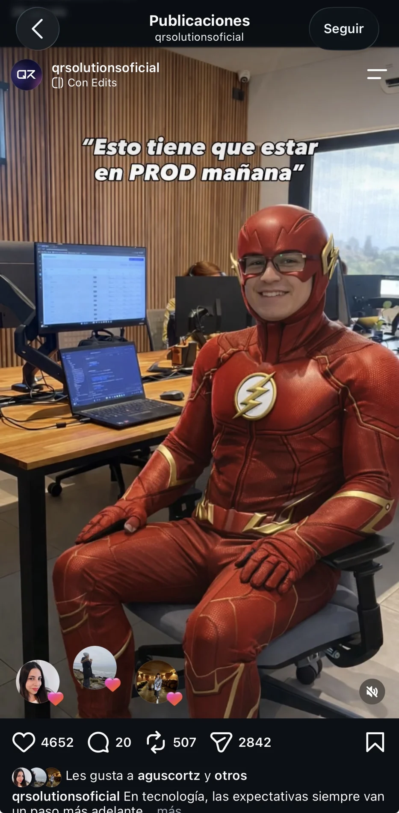
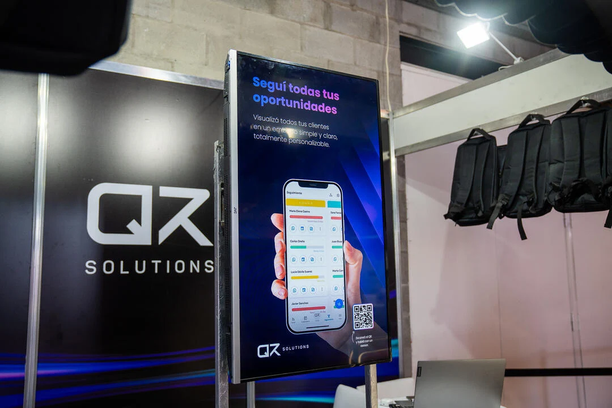
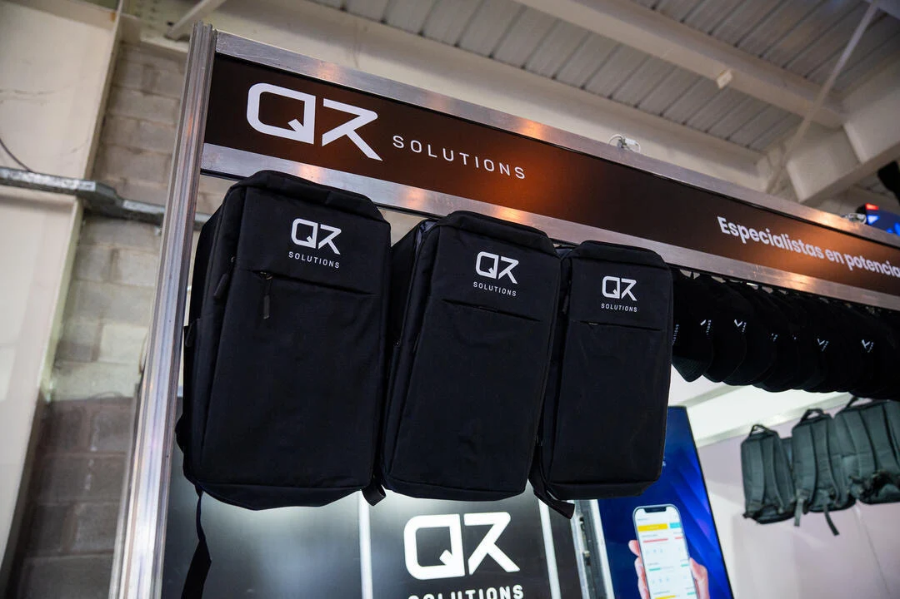
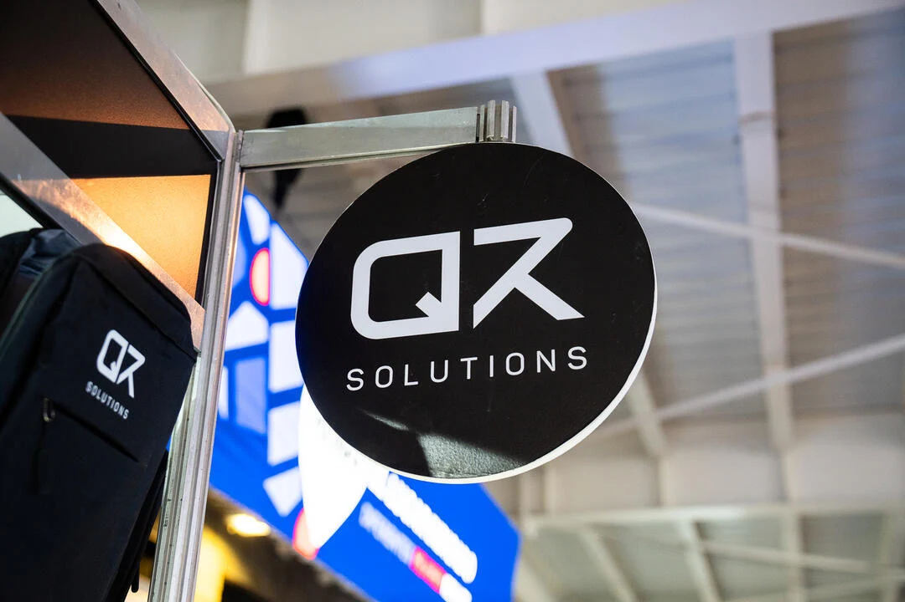
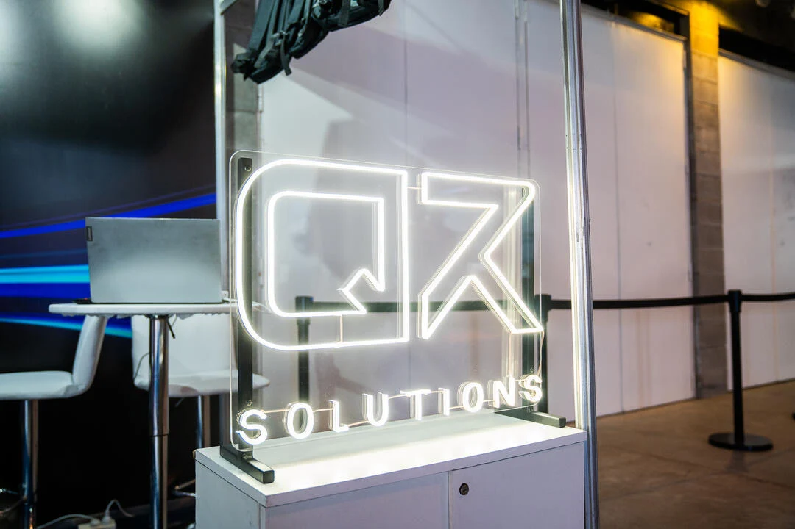
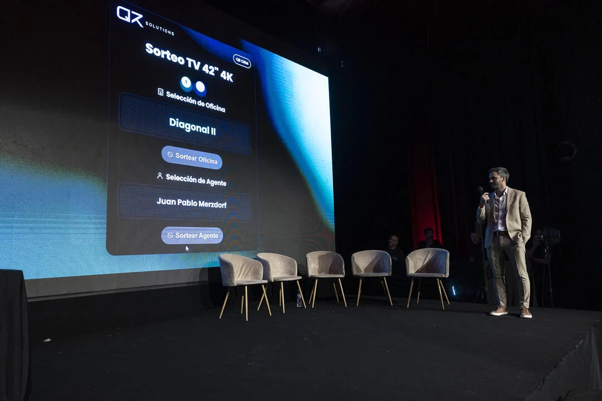
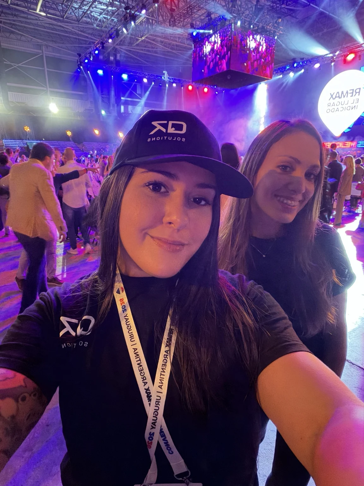
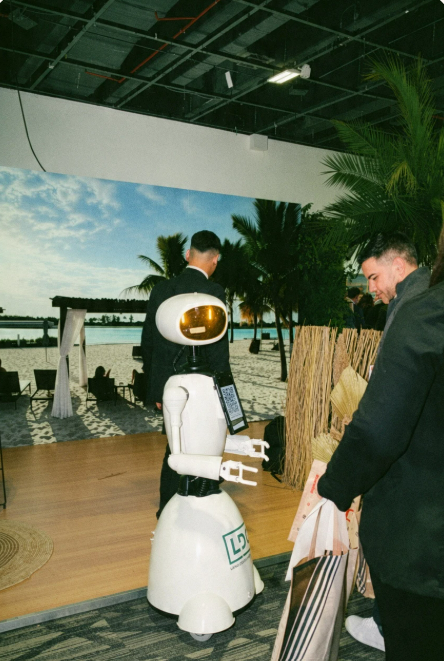
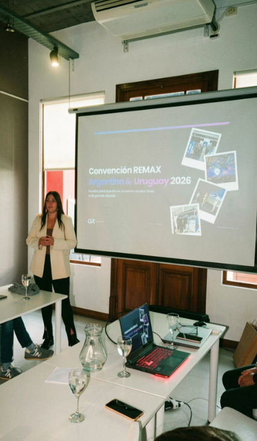
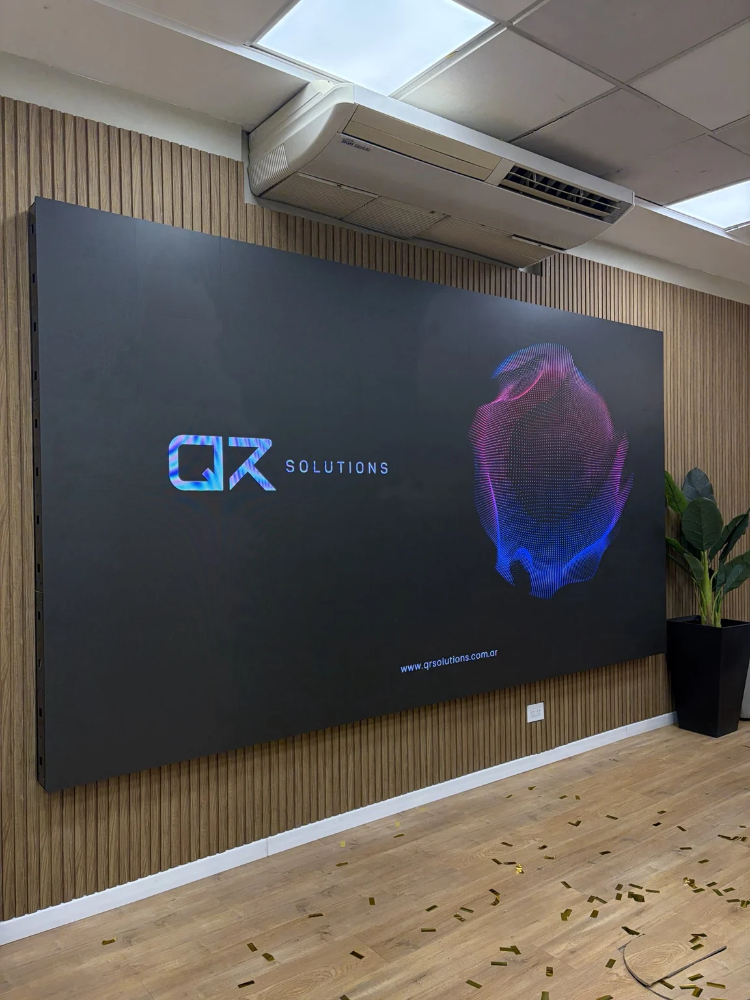

← ProyectosEstrategia de contenidos, rebranding y eventos
Q&R Solutions
Entré a Q&R combinando redes y soporte. Al poco tiempo pasé a dedicarme por completo al marketing digital, la comunicación y la imagen de la empresa.
Una identidad para la marca
El feed reunía versiones distintas del logo, colores y tipografías. Trabajé en el rebranding con el equipo de diseño. Definimos públicos, pilares de contenido y criterios visuales. Organicé el calendario de contenidos y llevé el seguimiento de mis tareas en GitHub. Además de diseñar piezas y editar videos, creé animaciones con Claude Design. Al finalizar mi etapa, la cuenta superaba los 5.500 seguidores orgánicos.
El feed antes del rebrandingEl feed después del rebranding El reel de Flash
Vi una tendencia y enseguida pensé en un pedido familiar para cualquier equipo de desarrollo: «Esto tiene que estar en PROD mañana». Ideé el reel, lo grabé y lo edité en CapCut en el momento. Superó las 150.000 reproducciones orgánicas y se compartió 2.842 veces.

El reel de Flash en InstagramConvención RE/MAX Argentina & Uruguay 2026
Estuve a cargo de la presencia de Q&R en la convención. Diseñé los paneles del stand, el merchandising y la ropa del staff. También desarrollé un juego interactivo, representé a la marca y generé contenido para redes durante el evento.

Panel de producto con acceso al CRM
Mochilas de la marca para el evento
Cartelería del stand
Logo luminoso de Q&R Solutions
Sorteo en el escenario de la convención
Con el equipo y la indumentaria de la marcaEvento de real estate en Argentina
En 2026 representé a Q&R Solutions en el stand del evento de real estate en Argentina. Participamos como partners tecnológicos de RE/MAX.

El stand en el evento de real estate · Argentina, 2026Charlas y presentaciones
Di charlas en reuniones de equipo. Diseñé la mayoría de las presentaciones en Canva y algunas en PowerPoint. Se usaron en encuentros en Argentina, Uruguay, Paraguay, Chile, Bolivia, República Dominicana, Ecuador y Las Vegas, Estados Unidos.

Presentación al equipo sobre la convención
Identidad de Q&R aplicada a una presentaciónComunicación y producto
Trabajé en email marketing, comunicación interna y externa, YouTube y la web. Colaboré en el portal de entrenamiento y aporté criterios para el módulo de marketing de Q&R Gestión. En mi última etapa creé un sistema de diseño en Claude Design para el equipo.
Siguiente proyecto · COME ON →